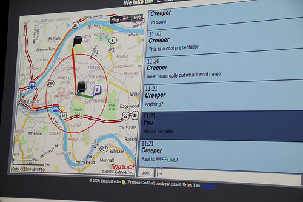

Fall 2009
The Yahoo! Hackathon is a 24-hour coding contest. Given just one day, what cool things can you make?
My team entered two hacks - a Wikipedia based racing game and a location-aware chatroom. Both won honorable mentions, and Creepy Chat won first place in the Hack Pitch competition.
WikiRacr - Honorable Mention Built with PHP/MySQL, sprinkled with jQuery, YQL and YUI.
Creepy Chat - 1st place Hack Pitch Winner, Honorable Mention Built with PHP/MySQL, Javascript and jQuery.
Photos courtesy of Rasmus Lerdorf.